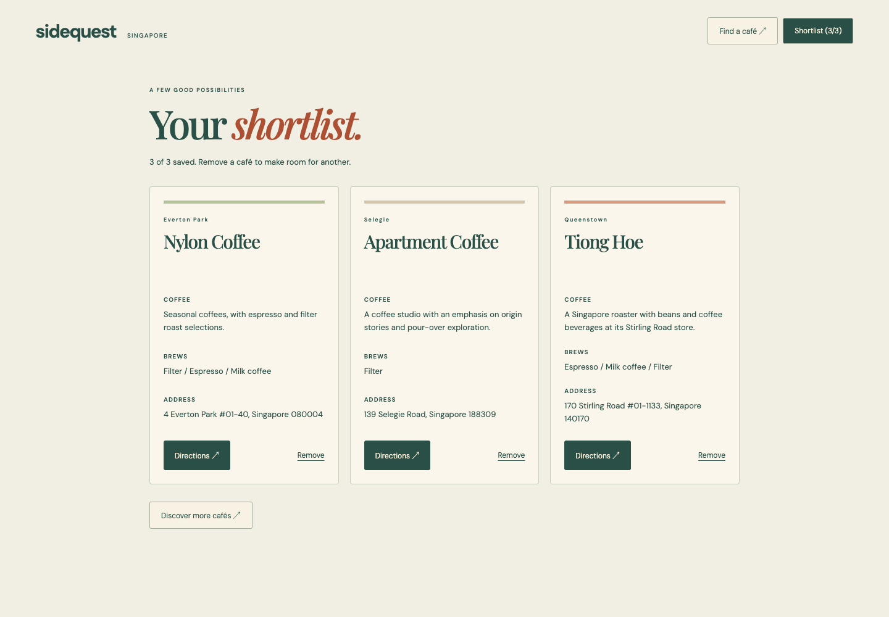
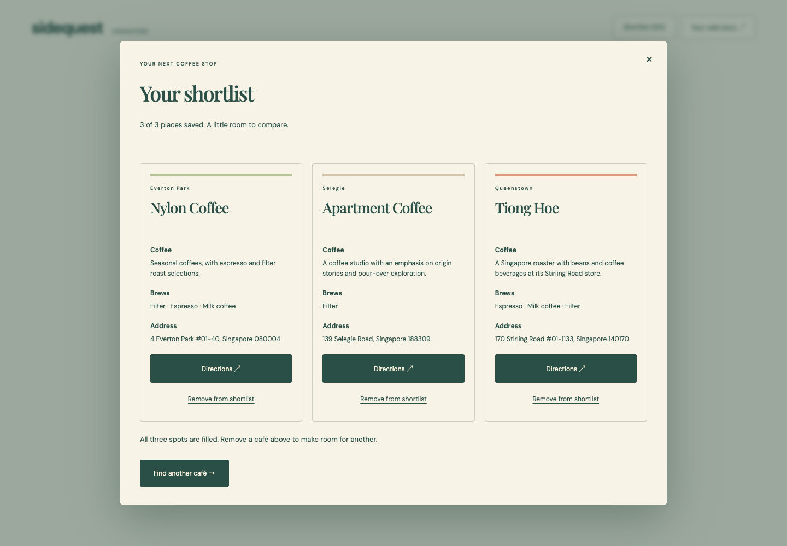

Sidequest / experiments 03 + 04 / 18 November 2026
One café feature.
Two development workflows.
Save three cafés, compare their facts, and keep the selection after refresh. Two isolated implementations share the same starting code, approved brief, and 22 independent acceptance criteria.
Experiment03 source and run instructions · Experiment04 source and run instructions
Read the full findings · Frozen acceptance criteria · Controls and limitations
A / café cedar
first-iteration-1.1
A full comparison page with stacked cards on mobile.
Independent acceptance: 22 / 22 passed
8 logic tests · app-local journey recipe and helper
Inspect independent evidence
B / café willow
pstack-inspired workflow
A comparison dialog over the current browsing view.
Independent acceptance: 22 / 22 passed
9 logic tests · discoverable verification skill and helper
Inspect independent evidence
Same cafés and viewport sizes. Mobile images show the initial viewport; both comparison surfaces scroll to remaining cafés. Open an image for its full resolution.
How the agents worked together
Same agent structure; different skill instructions. Both runs used a coordinator, one implementation owner and an independent reviewer. See the exact roles and handoffs.
01 · CoordinatorUser-approved brief, shared baseline, isolated worktrees and ownership.
02 · Independent reviewerFrozen acceptance before inspecting either implementation.
03 · One author per appCedar first, then Willow. Implement, test, inspect, preserve evidence.
04 · Review and comparisonReplay real controls against each frozen source; distinguish harness problems from product defects.
A's acceptance review overlapped B's implementation. The two authors did not share implementation code or outcomes. The coordinator knew which approach each used.
What differed in the workflow
The page-versus-dialog design was an implementation choice, not a requirement imposed by either workflow. Neither run used more agents than the other.
What the experiment taught us
- Retain visual review. B's self-review caught a mobile storage warning covering story controls after functional checks passed. It was fixed and the geometry was checked again.
- Check filenames early. Both authors hit the same case-insensitive collision between a UI file and the domain module.
- Preserve failed attempts. Automation locator and popup timing corrections are harness findings. Fixed output directories should become immutable per-run evidence directories.
- Use a discoverable verification recipe. Combine the repository's lifecycle structure with launch, doctor, drive, evidence and cleanup steps; maintain the recipe with the feature.
What this comparison cannot tell us
One run per approach cannot establish a general winner. Token cost was not measured, timestamps include pauses, and the same model and host were used. This adapts pstack practices to Codex; it is not an exact reproduction of Lauren Tan's personal environment. Chrome viewport emulation does not replace testing on physical devices or other browsers.